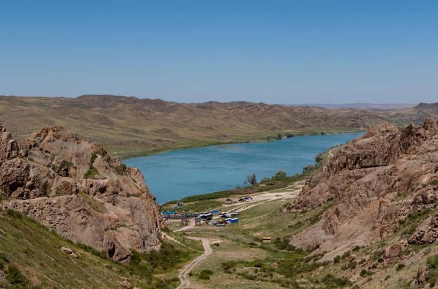
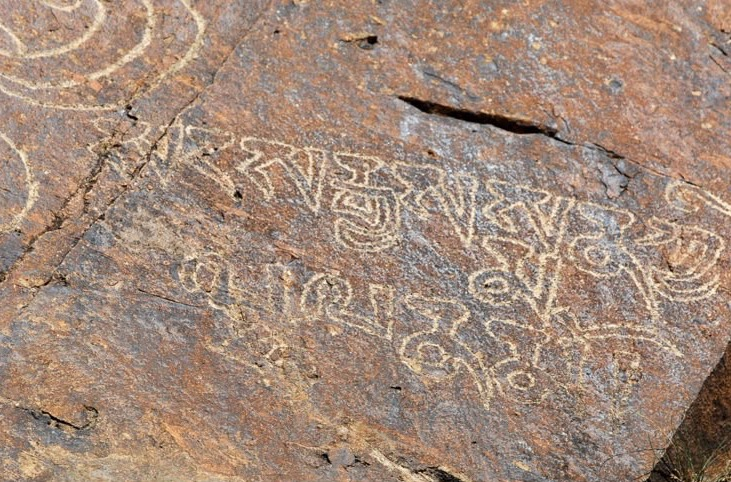
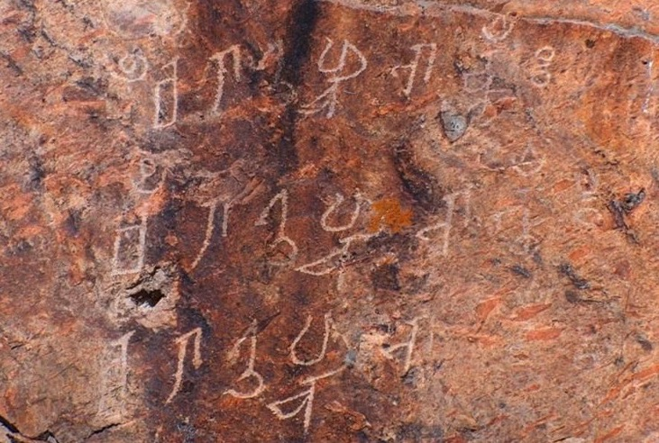
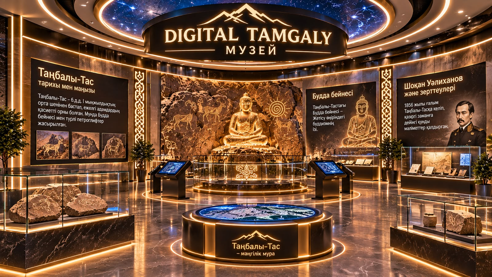
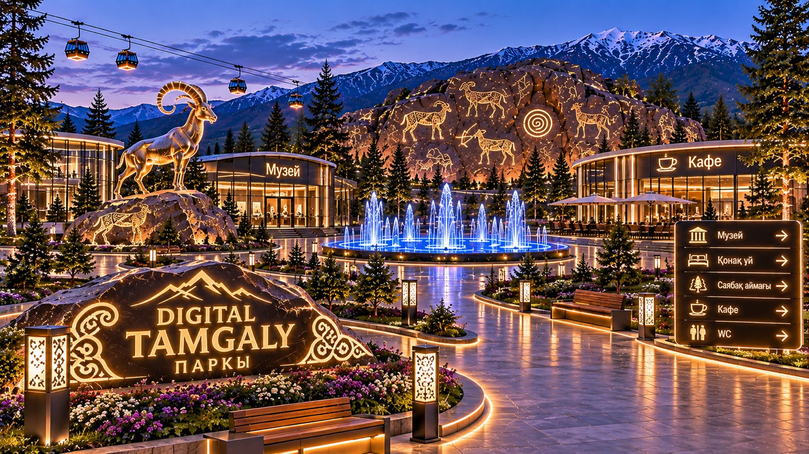
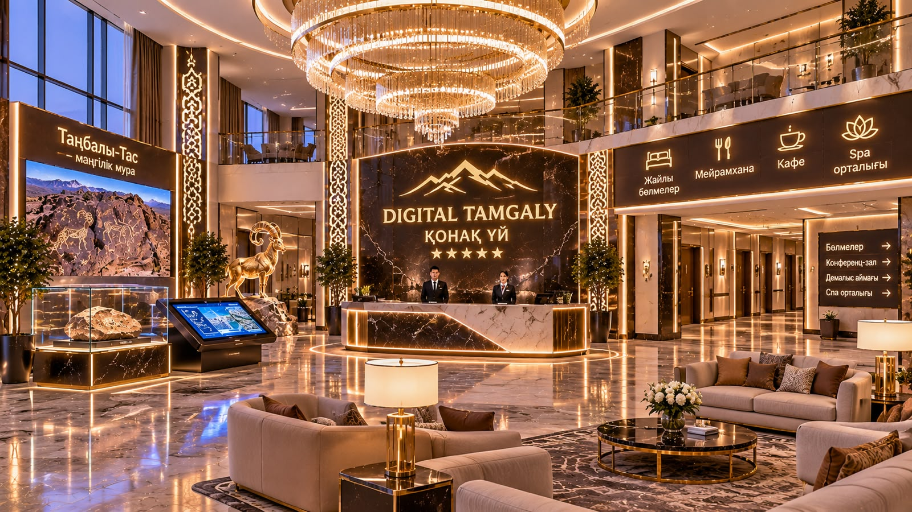

01
Шакьямуни
Будда · ілімнің негізін салушы
Буддизмнің негізін қалаушы Будда. Таңбалыда ол нұр шеңберінің ішінде, лотос үстінде аяғын айқастырып отырған қалпында бейнеленген.
Өткеннің тасқа қашалған жады — болашақтың цифрлық құндылығы. Жартасқа қашалған Будда бейнелері мен көне жазуларды үш өлшемде зерттеңіз.
Таңбалы тас — Алматы облысындағы Қонаев қаласына (бұрынғы Қапшағай) жақын, Іле өзенінің оң жағалауында орналасқан тарихи-мәдени ескерткіш. Ол Қапшағай су қоймасынан солтүстік-батысқа қарай шамамен 25 шақырым жерде.
Биіктігі 60 метрге дейін жететін тік жартастардың бетіне Будда мен бурхандардың (бодхисаттвалардың) бейнелері және тибет, ойрат тілдеріндегі діни жазулар шеберлікпен қашалған. Бұл ескерткіш XVII ғасырдағы Жоңғар дәуірінің мәдениеті мен буддизм тарихын зерттеуде маңызды орын алады.

Жартастың тегіс бетіне ойып түсірілген бейнелер айқын стильмен сызылып, контур сызықтарының көркемдігімен ерекшеленеді.
Буддизмнің негізін қалаушы Будда. Таңбалыда ол нұр шеңберінің ішінде, лотос үстінде аяғын айқастырып отырған қалпында бейнеленген.
Мейірім мен жанашырлықтың бейнесі. Жартастағы үлкен композицияның ортасында көп қолды бодхисаттва ретінде қашалған.
Емдеу мен денсаулықтың қамқоршысы саналған Будда. Оның бейнесі адамдардың сауығуға деген сенімін білдіреді.
Таңбалы тастарында тибет және ойрат тілдеріндегі діни жазулар кездеседі. Жазулар түрлі стильде орындалған — олар бейнелердің астында немесе қасында орналасып, композицияны толықтырады.
Өкінішке қарай, туризмнің қарқындауымен кей жерлерде ежелгі мәтіндердің дәл үстіне қазіргі заманғы жазулар түсірілген. Сондықтан ескерткіш кешенді қорғауды және цифрлық көшірмені қажет етеді.


1856 жылы қазақтың ұлы ғалымы Шоқан Уәлиханов осы ескерткішті зерттеп, бейнелерін қағазға түсірген.Ғылыми зерттеудің бастауы
XIX ғасырдан бүгінге дейін ескерткішті сипаттап, жазуларын оқып, сақтауға үлес қосқан зерттеушілер. Дәуір бойынша сүзіп көріңіз.
Таңбалы тасқа келіп, жартастағы бурхан бейнелерін алғаш рет сипаттап, қағазға салған. Ескерткіштің ғылыми зерттелуі осы жазбалардан басталады.
Ескерткіш туралы мәліметтерді толықтырып, Жетісудағы будда ескерткіштеріне қызығушылықты арттырған зерттеушілердің бірі.
Таңбалы тастағы тибет және ойрат (тодо бичиг) жазуларын оқып, түсіндірген. Жазулардың будда дұғалары екенін ғылыми тұрғыда көрсетті.
Жетісудағы көне жазулар мен ескерткіштерді жинап, жариялаған. Таңбалы тас жазуларын тіркеп, ғылыми айналымға енгізуге үлес қосты.
Жетісу өлкесінің ескерткіштерін зерттеп, Іле бойындағы будда бейнелері туралы деректерді толықтырған.
Қазақстан археологиясының негізін салушылардың бірі. Жетісудың тасқа салынған бейнелері мен ескерткіштерін кешенді түрде зерттеген.
Іле аңғарындағы археологиялық ескерткіштерді зерттеп, Таңбалы тас маңындағы тарихи-мәдени ортаны сипаттауға үлес қосқан.
Жоңғар дәуірі мен Жетісудағы будда ескерткіштерінің тарихын зерттеп, Таңбалы тас жазуларының тарихи контекстін ашуға үлес қосқан.
Жетісудың петроглифтерін құжаттау мен сақтау жобаларының жетекшілерінің бірі. Таңбалы тасты қайта тіркеп, жағдайын бағалаған.
Халықаралық зерттеу тобымен бірге Таңбалы тастағы бейнелер мен жазуларды жаңа әдістермен қайта құжаттауға қатысқан.
Петроглифтерді фотосуретке түсіріп, координатасын белгілеп, цифрлық паспорт пен 3D модель арқылы болашақ ұрпаққа сақтауды мақсат етеді.
Тізім толықтырылып отырады. Жаңа зерттеуші немесе еңбек туралы мәлімет болса, жобаға жіберіңіз.
Галереяны тышқанмен немесе саусақпен айналдырыңыз. Суретті басып, үлкейтіп көріңіз.
Әрбір петроглиф фотосуретке түсіріліп, координатасы белгіленеді, санатқа бөлінеді және жеке цифрлық идентификатор алады. Жасанды интеллект бейнелерді жүйелеуге көмектеседі, ал соңғы ғылыми қорытындыны зерттеуші жасайды.
Бейнелердің орналасуын интерактивті карта арқылы көрсету.
Пайдаланушы суретті жүктейді, жүйе оның қай санатқа жатуы мүмкін екенін ұсынады.
Фотосуреттер мен ғылыми сипаттамалар сақталатын дерекқор.
Фотограмметрия арқылы жартас бетінің үшөлшемді модельдері.
360° панорама және VR арқылы тарихи орынды қашықтан аралау.
Әр нысанның жеке цифрлық идентификаторы мен паспорты бар. Санат бойынша сүзіп, карточканы ашыңыз.
Мүжілген петроглифтердің контурын анықтау үшін зерттеушілер суретті цифрлық өңдейді. Суретті таңдаңыз немесе өзіңіздің фотоңызды жүктеңіз, сосын сүзгіні қолданып, «дейін / кейін» жолағын жылжытыңыз. Сурет тек сіздің браузеріңізде өңделеді, ешқайда жіберілмейді.
Контраст — жарық пен көлеңке айырмашылығын күшейтіп, ойылған сызықтарды айқындайды.
Виртуалды музей, туристік саябақ және қонақ үйден тұратын кешеннің концепт-визуализациясы. Мұндағы технологиялар: 3D модельдеу, VR, AR, ЖИ-гид, интерактивті экрандар және 360° панорама.



Мекенжайы: Алматы облысы, Қонаев қаласының маңы, Іле өзенінің оң жағалауы.
Координаталар: 44.061240° N, 76.998028° E
Ескерткішті қорғайық: жартастарға жазу жазбаңыз, бейнелерді ұстамаңыз және өрмелемеңіз. Әрбір сызат — қайтып келмейтін тарих.
2GIS картасында ашу ↗